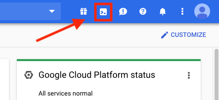

This CTF is based around attacking vulnerable cloud infrastructure on Google Cloud Platform (GCP). In each level, you will be tasked with exploiting various issues with deployed cloud infrastructure in order to find the "secret" of the level, which is a large integer stored somewhere in the infrastructure. The CTF is meant to be used by everyone from beginners to experts, so each level has a set of detailed hints that can help players where they get stuck, so the difficulty of the challenge is decided by the player based on how frequently they use hints. We strongly encourage you to try as hard as you can to solve the levels using the least number of hints possible, as this is how you will learn the most.
Thunder CTF works by deploying infrastructure on the fly to a Google Cloud Platform project owned by the player when the player deploys a level. Therefore, to play Thunder CTF, you will need a GCP project with billing enabled. If you are creating an account for the first time, you can get $300 in free credit here. However, Thunder CTF is very cheap to run, with its resource consumption fitting almost entirely into GCP's free tier. To save cloud credits, we recommend deploying levels only while you are playing and taking them down when you are done.
The CTF is played through Cloud Shell, a command line interface that is already set up for accessing cloud resources. It can be accessed by click the following icon at the top right of the GCP console located here:
Setup steps:
1. Create a new GCP project.
2. Enable billing on the project. Instructions can be found here.
3. Open cloud shell, and run the following commands:
gcloud config set project [PROJECT-ID] virtualenv -v env-tctf source env-tctf/bin/activate git clone https://github.com/NicholasSpringer/thunder-ctf.git cd thunder-ctf pip3 install -r requirements.txt python3 thunder.py activate_project [PROJECT-ID]
You are now ready to play the CTF! A full list of commands can be found by running:
python3 thunder.py help
Thunder CTF was built to be extensible, and we encourage players to make their own levels. For more information on how to create a level, visit the Level Development Guide and the Thunder CTF framework documentation.